Travel
고베＆나라
아름다운 항구도시
고베
동서양의 문화가 혼재되어 이국적인 향기가 물씬 나는 아름다운 항구도시. 일본 최초로 개항된 대외무역항 중 하나로 일찌감치 서양 문물을 받아들여 도시곳곳에 이국적인 정취가 남아있다. 특히 커피, 디저트 문화가 발달해 스타벅스 등 유명 프랜차이즈 커피보다 고베지역의 커피가 더욱 유명하다. 1995년의 대지진 이후 예전의 모습을 완전히 되찾아 많은 관광객들이 찾고 있다.
히메지성
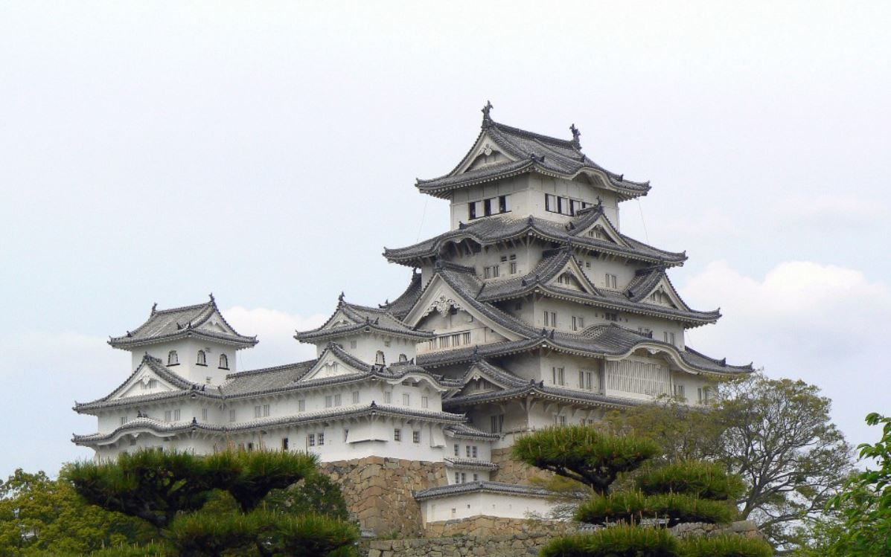 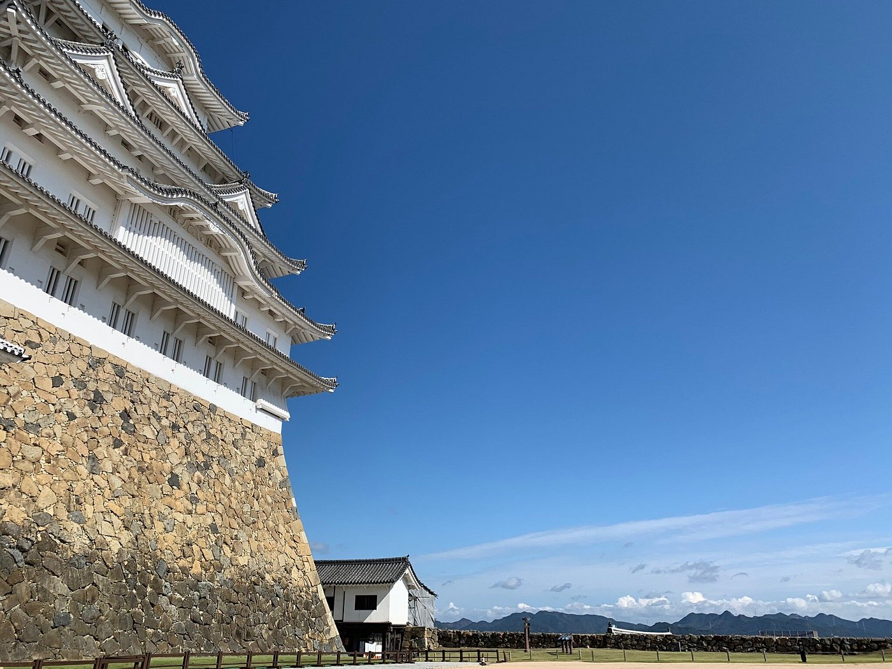
히메지성은 17세기 초에 방어 체계를 갖춘 성곽으로 만들어졌으며, 총 83개의 건물로 이루어져 있다. 성의 흰색 외벽과 날개 모양의 지붕이 마치 백로의 모습과 비슷하여 시라사기성[백로성]이라는 별칭을 가지고 있다. 성곽을 둘러싼 일대는 벚꽃과 단풍의 명소로 유명하며, 벚꽃과 단풍속에 우뚝 선 백로와 같은 성은 아름답지만 이러한 모습 뒤에 철저한 방어 체계와 보호 장치를 갖춘 튼튼한 요새로서의 진면목이 감춰져 있다. 1993년 유네스코 세계문화유산으로 지정되었으며 세계적으로 높은 평가를 받고 있는 문화유산이다.
하버랜드
 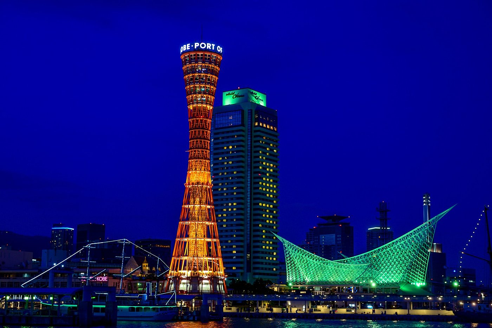
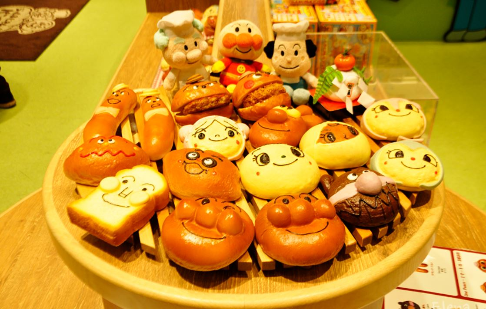
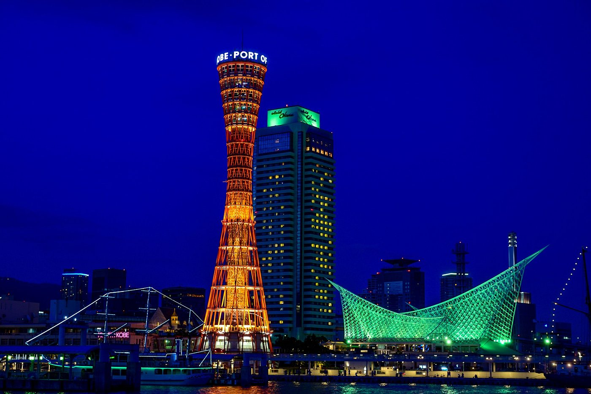
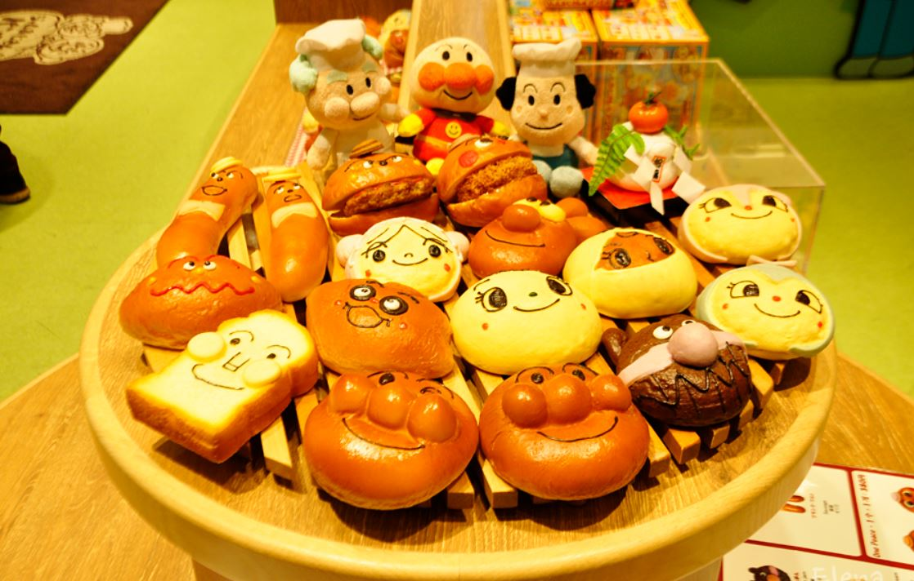
바다를 따라 유원지와 오락시설 등이 즐비한 고베역 동쪽, 재개발 지역을 일컫는다. 쇼핑몰 모자이크, 대관람차를 비롯해 다양한 볼거리가 많아 한나절 산책하면서 즐기기 좋다. 밤의 바다와 불빛이 만들어내는 야경이 환상적이며 주말에는 놀러 나온 가족과 연인들로 항상 붐빈다. 하버랜드의 주요 명소는 고베 역에서 도보 10분 거리에 집중되어 있다. 바닷가에 위치한 복합쇼핑몰인 모자이크는 보도블록을 중심으로 레스토랑, 의류점, 잡화점, 영화관 등 다양한 상점들이 잘 정비되어 있어 산책하는 기분으로 쇼핑을 즐길 수 있다. ‘모자이크 광장’에서는 바다가 바라보이는데 특히 이곳에서 보는 바다 야경은 데이트 1순위로 각광받을 만큼 아름다운 뷰를 자랑한다. 불빛을 머금은 고베 항 앞바다의 야경 사진은 대부분 이곳에서 촬영한 것이라고 해도 과언이 아니다. 모자이크 건물 남쪽 끝에는 대관람차가 있어 낭만적인 고베 야경의 한 축을 담당하고 있다. 대관람차 바로 앞에 위치한 ‘호빵맨 뮤지엄’도 가족 단위 방문객이 많이 찾는 명소다.
기타노이진칸
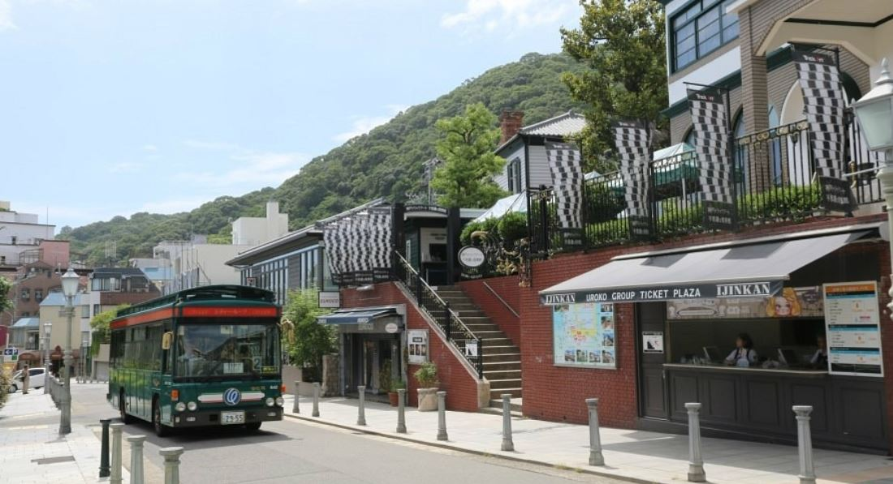 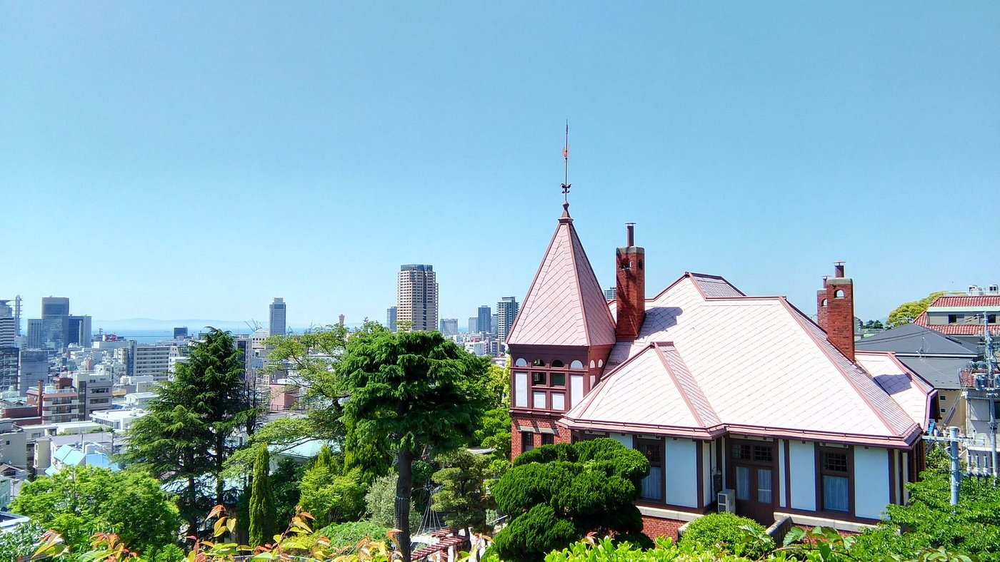일본 최대의 무역항이던 고베는 색다른 풍취가 느껴지는 곳으로 외국인 거주지였던 기타노이진칸이 이국적인 분위기의 중심을 이룬다. 고베 항 개항 이래 항구 부근에 모여 살던 사람의 수가 많아지자 기타노초 주변으로 거주지를 확장하면서 이진칸가이가 조성되었다. 당시 200채가 넘던 외국인 건물은 지금은 30채 정도로 줄었지만 이국적인 분위기는 남아 있다. 옛 거류지는 상점이나 사무실로 쓰인 곳이 많은 반면, 기타노이진칸은 일반인의 주택으로 쓰인 곳이 많아 건물이 아기자기하고 아름답다. 일본 속의 유럽을 느껴보고 싶다면 이 거리를 산책해보자. 최근 관광객의 수가 증가하면서 일반인에게 공개하는 저택의 수도 20여 채로 늘어났다. 단, 건물 대부분이 각각 입장료를 받는다. 미리 보고 싶은 곳을 정하고 방문하면 좋다. 2관~9관의 요금을 할인해 주는 공통권도 있다.
전설과 현실이 공존하는
사슴들의 도시 나라
1300년 전 일본 최초의 수도인 나라는 교토 다음으로 일본에서 가장 많은 문화 유산이 남아있는 곳으로 일본에서 손꼽히는 관광지 중 하나이다. 거대한 청동 불상이 있는 절인 도다이지와 길게 이어진 석등으로 유명한 가스가타이샤 등 유네스코 세계문화유산으로 지정된 유서 깊은 사찰들이 남아 있으며 도심 곳곳에서 사슴이 자유롭게 노니는 나라공원을 중심으로 아름다운 풍경을 감상하며 느긋하게 휴식을 즐기기에 좋다.
나라공원
 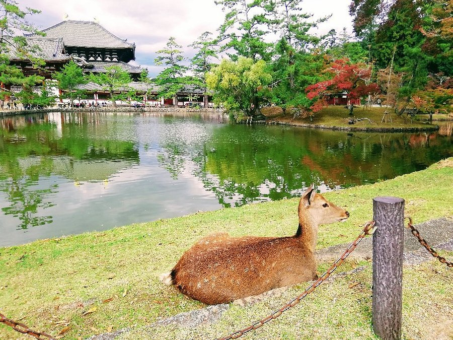
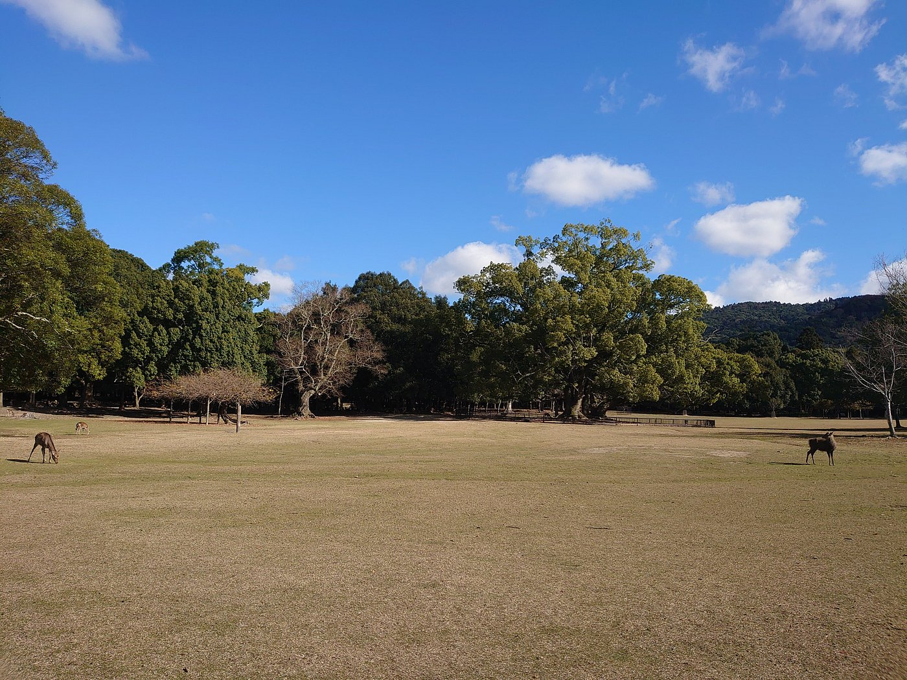
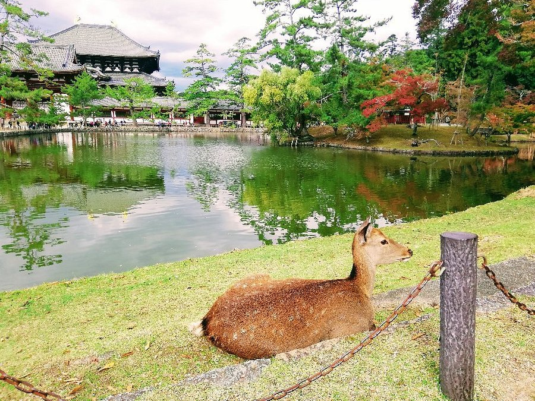
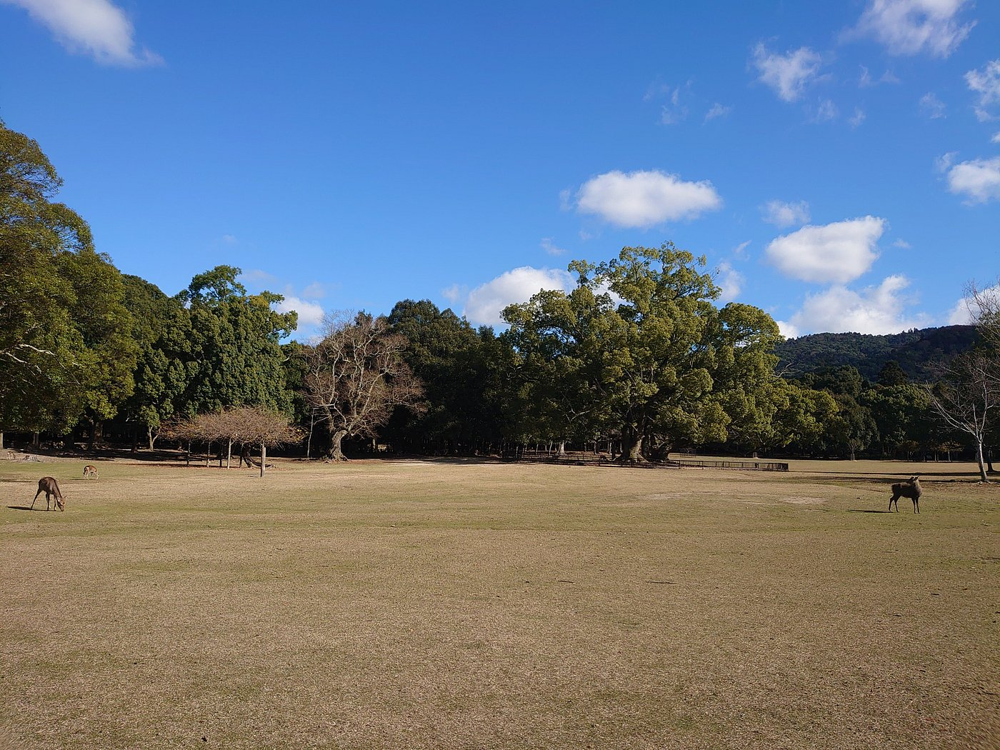
나라의 동쪽 고후쿠사 부근에서부터 와카구사산에 걸쳐 있는 넓은 지역에 있다. 동서 4km·남북 2km의 대공원으로 도다이사·가스가타이샤 등 세계문화유산과 나라국립박물관·나라현립미술관·사슴공원 등도 함께 볼 수 있다. 나라국립박물관은 메이지시대의 건물인 본관과 근대적 건물인 신관으로 이루어져 있는데, 1894년에 세워진 본관 건물은 그 자체가 중요문화재로 지정되어 있다. 현재 1,200여 점의 소장품을 전시하고 있는데, 대부분이 불교미술 관련 작품이어서 일본 불교을 이해하는 데 도움이 된다. 울창한 수목과 잔디밭에서 떼지어 노니는 1,200마리의 사슴들이 그림 같은 경관을 만들어내며, 봄가을의 경치가 특히 아름다워 관광객들이 많이 찾아온다.
도다이지
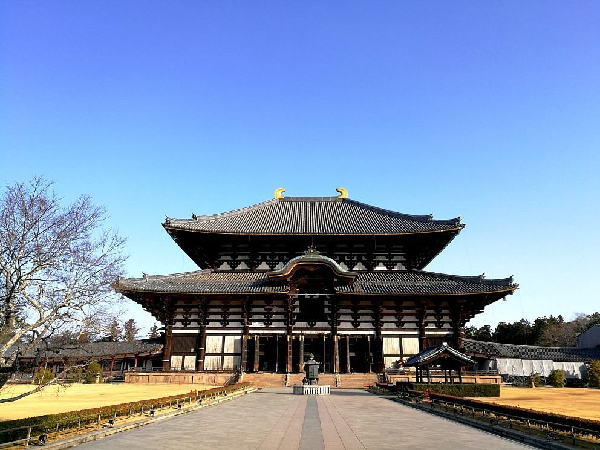